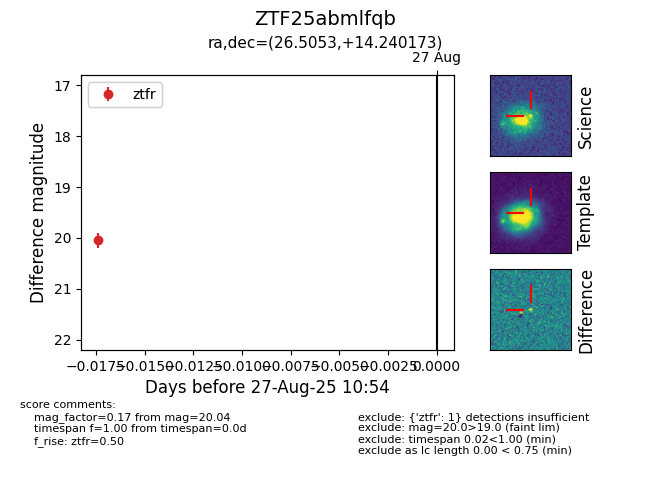

Target ZTF25abmlfqb at 2025-08-27 10:54, see:
FINK: fink-portal.org/ZTF25abmlfqb
Lasair: lasair-ztf.lsst.ac.uk/objects/ZTF25abmlfqb
ALeRCE: alerce.online/object/ZTF25abmlfqb
alt names
ZTF25abmlfqb (ztf,fink)
coordinates:
equatorial (ra, dec) = (26.5053,+14.24017)
galactic (l, b) = (142.3575,-46.56253)
photometry
last ztfr=20.04
1 ztfr detections
